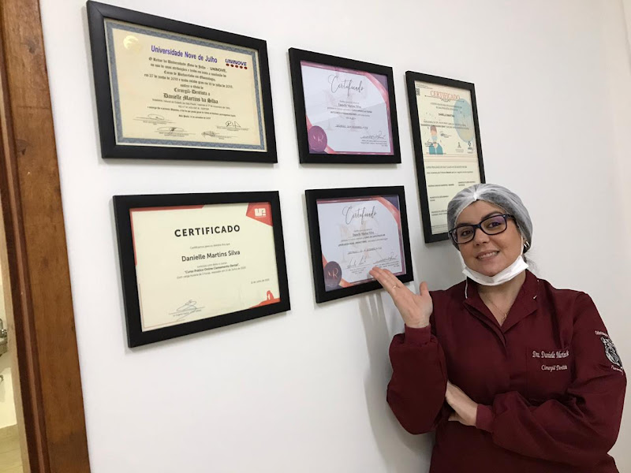

EMERGÊNCIA ODONTOLÓGICA · ALTO, PIRACICABA/SP
Atendimento particular 24 horas com a Dra. Danielle Martins Silva, Cirurgiã-Dentista — CRO-SP 135304. Não cuidamos apenas de dentes, cuidamos de pessoas.
COMO FUNCIONA
Três passos entre o momento em que você chama a gente e o momento em que a dor para.
01
Conta o que está sentindo — a Dra. Danielle responde e já orienta os próximos passos.
02
Consultório particular na Rua Moraes Barros, no Alto — sem fila de convênio, sem espera de dias.
03
Diagnóstico, tratamento da urgência e orientação clara sobre os próximos cuidados.
O QUE TRATAMOS
Além do atendimento de urgência 24h, a Dra. Danielle também acompanha o tratamento completo — sem precisar te encaminhar pra outro consultório.

Consultório real · PiracicabaQUEM VAI TE ATENDER
Formada em Odontologia pela Universidade Nove de Julho (UNINOVE), com especializações e atualizações constantes — no consultório, atendendo você mesma, sem intermediários.
Não cuidamos apenas de dentes, cuidamos de pessoas.Alívio & Sorriso · Piracicaba/SP
ATENDIMENTO 24H